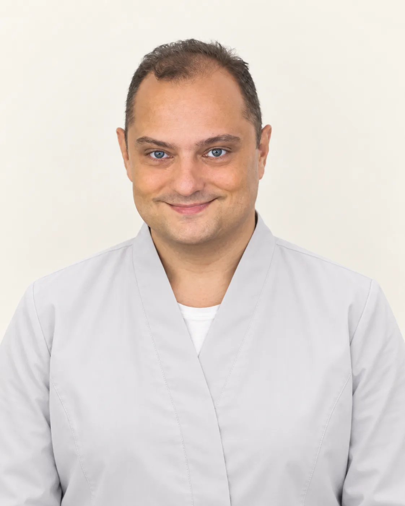
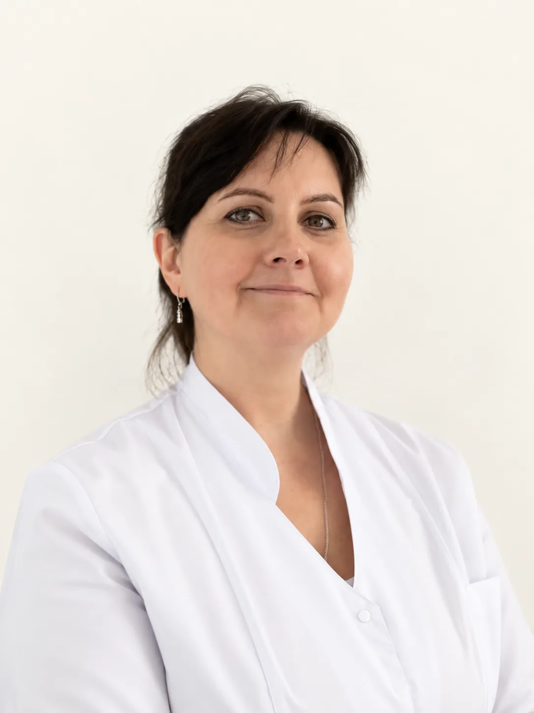

МаксимовМаксим Леонидович
Врач-терапевт · клиническая фармакология
Терапия, клиническая фармакология, безопасность и коррекция лекарственной терапии
- Опыт
- более 25 лет
Самочувствие и лечение
Программа «Сезонное ОРВИ»: терапевт ведёт вас от первого приёма до выздоровления, с повторным приёмом и анализами по назначению.
Программа стоит 9 000 ₽: первичный приём терапевта, план лечения, лабораторная диагностика по назначению врача и повторный приём. На анализы и капельницы скидка 10%.
ОРВИ у взрослых обычно проходит за 5–10 дней, но иногда затягивается или осложняется синуситом, бронхитом, отитом или пневмонией. Программа «Сезонное ОРВИ» в клинике 8.0.8 у метро «Римская» нужна, чтобы болезнь шла под контролем врача: терапевт оценит состояние, составит план лечения и проверит на повторном приёме, как идёт выздоровление.
В программу входят приём врача-терапевта (осмотр, сбор жалоб и анамнеза, оценка состояния, план лечения), лабораторная диагностика по назначению врача, лечение и повторный приём. Капельницы и лабораторные исследования оплачиваются отдельно, участникам программы на них скидка 10%.
Записаться можно ежедневно с 9:00 до 21:00.
После приёма вы будете понимать:
Неосложнённое ОРВИ у взрослого проходит за 5–10 дней. От заражения до первых симптомов обычно проходит от 1 до 5 дней.
Если болезнь идёт иначе, температура держится дольше трёх дней или после улучшения снова стало хуже, это повод показаться врачу.
ОРВИ вызывают вирусы, а антибиотики действуют только на бактерии. При неосложнённом ОРВИ они не ускоряют выздоровление, но могут вызвать побочные эффекты и сделать бактерии устойчивыми к лечению.
Антибиотик нужен, когда к вирусной инфекции присоединилась бактериальная: например, синусит, отит, бронхит или пневмония. Распознать это и выбрать лечение может только врач после осмотра, а иногда и анализов. Поэтому программа включает повторный приём: врач видит, как меняется состояние, и вовремя замечает осложнение.
Если появились признаки ниже, вызывайте скорую помощь по номеру 103 или 112:
Первый шаг
«Сезонное ОРВИ»: программа лечения у врача-терапевта. Приём врача-терапевта (осмотр, сбор жалоб и анамнеза, оценка состояния, план лечения), лабораторная диагностика по назначению врача, лечение, повторный приём. Капельницы и лабораторные исследования оплачиваются отдельно; участникам программы скидка 10% на капельницы и лабораторные исследования.
9 000 ₽
ЗаписатьсяКапельницы и лабораторные исследования оплачиваются отдельно, участникам программы скидка 10%. Взятие крови из вены 420 ₽.
Все цены
Врач-терапевт · клиническая фармакология
Терапия, клиническая фармакология, безопасность и коррекция лекарственной терапии

Врач-терапевт
Диагностика, лечение и профилактика заболеваний внутренних органов; бронхолёгочные заболевания
Приём врача-терапевта (осмотр, сбор жалоб и анамнеза, оценка состояния, план лечения), лабораторная диагностика по назначению врача, лечение и повторный приём.
Нет. Анализы и капельницы оплачиваются отдельно, участникам программы на них скидка 10%. Какие анализы нужны, решает врач на приёме.
Антибиотики на вирусы не действуют. Врач назначает их, только если находит бактериальное осложнение.
Да. Разовый приём терапевта стоит 5 800 ₽, повторный 5 000 ₽.
Лучше в первые дни болезни, особенно если есть хронические заболевания, температура держится дольше трёх дней или вы болеете уже не первый раз за сезон.
Обычно 5–10 дней. Температура держится 2–3 дня, остаточный кашель может сохраняться до 2–3 недель.
Да. Возьмите с собой маску. Если стало трудно дышать, появилась боль в груди или спутанность сознания, не ждите приёма и вызывайте скорую помощь по номеру 103 или 112.
Позвоните по телефону +7 (938) 099-30-09 или нажмите «Записаться» на этой странице. Клиника работает ежедневно с 9:00 до 21:00 у метро «Римская».
Имеются противопоказания. Необходима консультация специалиста.